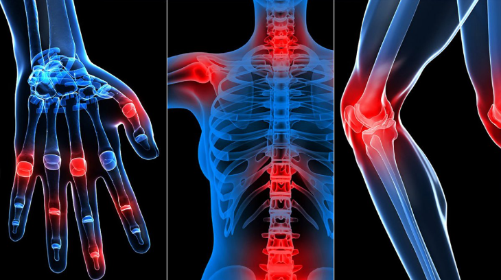

Algoloji
Ağrı ve ağrılı hastalarla, Algoloji'nin yanı sıra, Ortopedi & Travmatoloji, Omurga
Cerrahisi, Nöroloji, Nöroşirurji, Fizik Tedavi & Rehabilitasyon, Romatoloji gibi birçok
tıp dalı da ilgilenmektedir.
Baş Bölgesine Yönelik Girişimsel Yöntemler
Nevraljiler:Yüz bölgesinde ortaya çıkan yüz yıkama, traş olma, yemek yeme gibi durumlarda
ortaya çıkan çok şiddetli ağrılara nevralji adı verilir. Bu gibi durumlarda ilaç tedavisine yanıt vermeyen
hastalarda, radyo dalgalarına benzer akımların gönderildiği radyofrekans yöntemiyle tedavi uygulanır.
Şiddetli Baş Ağrıları:Yine ilaç tedavisine yanıt vermeyen, özellikle küme tipi baş ağrılarında
ultrason ve skopi eşliğinde yapılan sinir blokları ve radyofrekans yöntemiyle ağrıların kontrol altına
alınmasına çalışır.
Boyundan Kaynaklanan Baş Ağrıları:Boyun eklemlerinden kaynaklanan baş ağrılarında,
ağrının nedenine yönelik çeşitli tedavi yöntemleri ve ileri görüntüleme yöntemleri eşliğinde uygulanır.
Algoloji Birimimizin İşlevleri:
- Ağrı nedeninin belirlenmesi
- Ağrının tedavisi
- Hastanın tedavi sonrası eğitimi
- Hastanın uzun süre izlenmesi
- Hastanın doğru hekime yönlendirilmesi
- Ağrı konusunda halkın eğitimi
Algoloji'ye Başvuran Hastaların En Sık Yakındığı Ağrılar:
- Bel ve bacak ağrıları, bel fıtığı ve diğer nedenlere bağlı ağrılar,
- Boyun ve kol ağrıları, boyun fıtığı ve diğer nedenlere bağlı ağrılar, omuz kol ağrıları,
- Baş ağrıları:Migren, gerilim tipi baş ağrıları ve diğerleri,
- Yüz Ağrıları:Nevraljiler,
- Kas iskelet sisteminden kaynaklanan ağrılar:Myofasyal ağrılar,
- Nöropatik Ağrılar: Sinir sisteminin belirli bölgelerdeki harabiyetinden kaynaklanan ağrılar,
- Damarlardan kaynaklanan ağrılar,
- Ameliyat sonrası görülen ve geçmeyen ağrılar,
- Kanser ağrıları,
- Nedeni belli olmayan ağrılar
Hangi Ağrılar Nasıl Tedavi Ediliyor?
Ameliyat sonrası ağrılar çoğunlukla sinirlerin bulunduğu bel bölgesinden küçük dozda ağrı kesici uygulanarak
tedavi edilebiliyor, Ayrıca ağrının hissedildiği merkeze ağrıyı taşıyan siniri etkisiz hale getirerek de
ağrıları tedavi etmek mümkün.
Bel fıtığı ve omurga sistemindeki bozukluklardan kaynaklı ağrılar boyun ya da sırttaki sinirler üzerinde
baskı ve yangı yaratarak ağrıya neden oluyor. Yangıyı gideren ilaçlar özel görüntüleme sistemleriyle ilgili
sinir çevresine uygulanıyor. Omurga kemikleri arasında bulunan disklerin hacmini azaltan girişimler de
yapılıyor. Kanser ve kanser dışı ağrılarda da aynı yöntemler uygulanabiliyor.
Neresi Ağrıyorsa Oraya Özel Tedavi Mümkün mü?
Günümüzde girişimsel ağrı tedavisi yöntemleriyle ağrının algılanışından, taşınması ve işlenmesine kadar
geçen süreçlere etki edilerek ağrılar dindirilebiliyor. Özellikle radyofrekans ve ozon uygulamalarıyla,
bel fıtığı ağrıları, baş ve boyun ağrıları, ameliyat sonrası ağrılar ve kanser ağrıları tedavi edilebiliyor.
Başarısız Bel Cerrahisinden Sonra Uygulanan Girişimler:
Bazı hastalarda bel cerrahisinden sonra ameliyat bölgesinde yapışıklıklar ortaya çıkar ve bu hastalarda
bel fıtığından daha farklı, sürekli ve şiddetli ağrılar ortaya çıkar. Bu durumda yapışıklıkları çözmek
üzere “Epidural Nöroplasti” uygulanır. Yani yapışıklık bölgesine ince kataterler gönderilerek bölgeye
yüksek yoğunlukla serum fizolojik steroid ve hyalurinidaz gibi ilaçlar verilerek yapışıklıkların açılması
sağlanır.